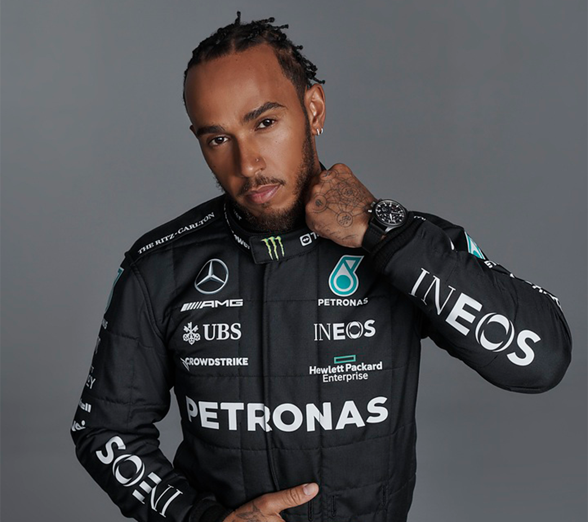
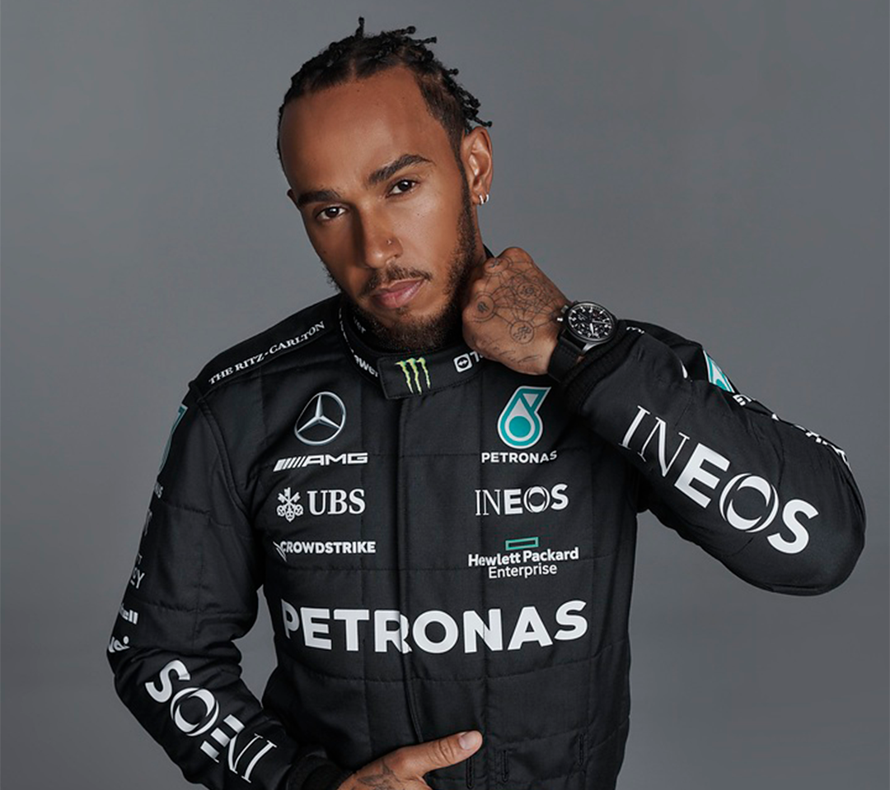

Scuderia Ferrari


Scuderia Ferrari es la división deportiva (Gestione Sportiva) de automóviles Ferrari encargada de las competiciones de Fórmula 1. Ferrari Corse Clienti se encarga desde hace poco[¿cuándo?] de casi todas las otras actividades deportivas de la compañía y la atención a equipos privados. La primera participación de Ferrari en Fórmula 1 fue en el Gran Premio de Mónaco de 1950, con el Tipo 125 F1. Ferrari es considerado uno de los cuatro grandes equipos de Fórmula 1, junto con Williams, McLaren y Mercedes. Es el equipo activo más antiguo del campeonato, y es el que ha conseguido más victorias, campeonatos de pilotos (15) y campeonatos de constructores (16). Ha contado con muchos de los pilotos más destacados de la historia de la Fórmula 1 como Michael Schumacher, Niki Lauda, Juan Manuel Fangio,Alberto Ascari, Alain Prost, Nigel Mansell, Carlos Reutemann, Gilles Villeneuve, Kimi Räikkönen, Sebastian Vettel y Fernando Alonso, entre otros. Los pilotos actuales son Charles Leclerc y Carlos Sainz Jr.. El director del equipo es Mattia Binotto. En sport prototipos y gran turismos, Ferrari ha obtenido nueve victorias absolutas en las 24 Horas de Le Mans, ocho en la Mille Miglia y siete en la Targa Florio; además ha conquistado múltiples títulos de constructores en el Campeonato Mundial de Resistencia.
Red Bull Racing
Red Bull Racing es una escudería austriaca de Fórmula 1 con base en Milton Keynes (Inglaterra), propiedad de la empresa de bebidas energéticas Red Bull. La compañía adquirió la escudería Jaguar Racing por cerca de 110 millones de dólares cuando la propietaria anterior de este equipo, Ford Motor Company, anunció su retirada de la máxima categoría del automovilismo. La empresa Red Bull posee un equipo filial de Fórmula 1, Scuderia AlphaTauri (conocida hasta 2019 como Scuderia Toro Rosso), con sede en Faenza (Italia), desde el que los jóvenes pilotos dan posteriormente el salto al primer equipo. Compite desde 2005 y en sus dos primeras temporadas corrió con licencia británica.
Si bien la escudería debe su nombre a la empresa de bebidas Red Bull, la cual además de su propietaria es a su vez su principal patrocinador, la denominación comercial del equipo ha recibido modificaciones en distintas temporadas, en el que incorporaron a la misma el nombre de distintos patrocinadores notables que han logrado cerrar acuerdo con la escudería. Cuenta en su palmarés con cinco Mundiales de Pilotos (cuatro de Sebastian Vettel y uno de Max Verstappen) y cuatro Mundiales de Constructores.
Mercedes-AMG Petronas
 


Mercedes-Benz es una de las automotrices más exitosas de la Fórmula 1, considerada uno de los cuatro equipos con mejores resultados, junto con Williams, Ferrari y McLaren.Participó inicialmente como constructor en Fórmula 1 en 1954 y 1955, y volvió a hacerlo desde 2010 hasta la actualidad. El equipo alemán ganó ocho Campeonatos de Constructores de forma consecutiva (de 2014 a 2021). Es la tercera escudería que posee más Campeonatos de Pilotos, con nueve (1954, 1955, 2014, 2015, 2016, 2017, 2018, 2019 y 2020); ganados por Lewis Hamilton (6), Juan Manuel Fangio (2) y Nico Rosberg (1). También es el tercer equipo en la historia con más victorias (124) y poles (135) en todos los ítems anteriores, solamente por detrás de Ferrari y McLaren.